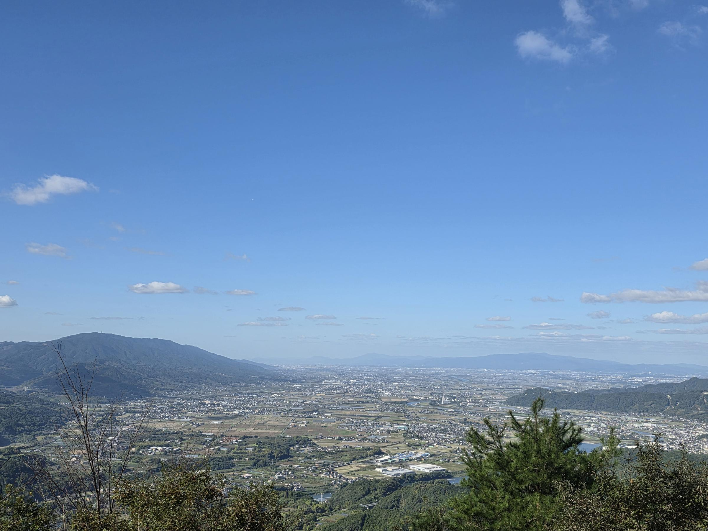

三日月山の展望台とくつろぎ広場から西を見ると、筑後川と筑後平野の向こうに、久留米・鳥栖の町や佐賀の山まで見わたせます。名前を押すと説明が出ます。「カメラで見る」では、東の由布岳・くじゅう連山など、ほかの方角の山の名前も出ます。

スマホでは写真を左右になぞると、景色の続きが見られます。
山・町・川の名前と、ここからの距離が出ます。
・名前の位置は、国土地理院の標高データと OpenStreetMap の地図データから計算しました。距離は見ている場所からの直線距離です。
・遠くの山（天山・脊振山・くじゅう連山・祖母山など）は、空気が澄んだ日だけ見えます。
・ほかの方角の名前は地形から計算したもので、木に隠れて見えないところもあります。
・「カメラで見る」はスマホの方位センサーを使います。位置情報は使いません。カメラの映像はスマホの中だけで使い、どこにも送りません。